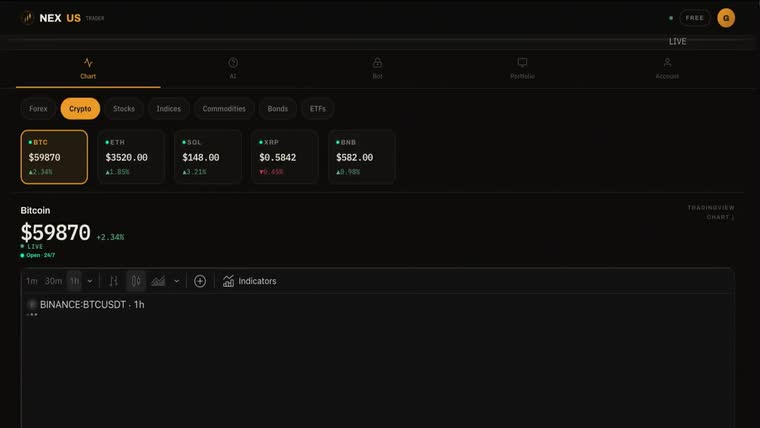
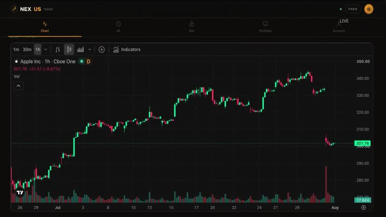
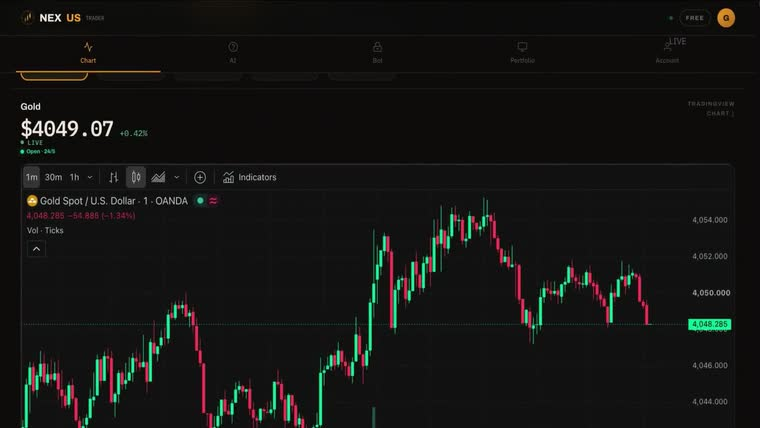

- Scope
- Full-stack product
- Status
- Running
- Palette
NEXUS
NEXUS is an AI-assisted trading platform the studio designed, built, and operates. It exists partly as a product and partly as an argument: a studio that ships software it has to maintain is a different proposition from one that ships mockups.
- Client
- Longtake Studio (in-house)
- Scope
- Full-stack product
- Role
- Product, design, engineering, ops
- Status
- Running
The brief
Learning to trade has a bad failure mode: the only way most people find out their strategy does not work is by losing money proving it. Paper trading solves that, but the tools for it are usually either toys or bolted onto a broker that would rather you were trading for real.
NEXUS was built to sit in between — serious enough to teach something, safe enough that being wrong costs nothing.
The build
This is a full application rather than a marketing site: accounts and authentication, a live market data pipeline, and a paper-trading engine that has to settle positions correctly every time or the entire premise fails.
Interface work at this density is a different discipline from a landing page. Numbers have to stay legible while updating, state has to be obvious at a glance, and nothing decorative is allowed to compete with the data.
The detail
- Live data, handled honestly. Market feeds fail, lag, and reconnect. The interface says which of those is happening instead of quietly showing a stale number as though it were current.
- A paper engine that actually settles. Positions, fills and running P&L are computed properly. A learning tool that models the wrong thing teaches the wrong lesson.
- Auth and payments in production. The unglamorous half of shipping a product, and the half that proves a studio can be trusted with one.
Why it matters
Most studios show you the work they handed off. NEXUS is the work we did not hand off — still running, still our responsibility when something breaks at an inconvenient hour.
If you are weighing whether this studio can build the software behind your site and not just the surface of it, this is the answer.